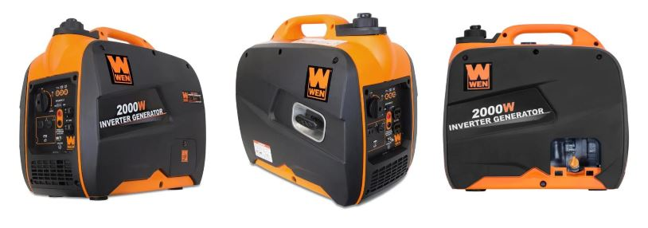
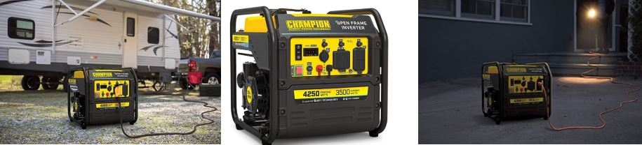

Generators for camping: Ultimate Guide.

Whenever we go out camping, it is always a good idea to take a backup source of electricity. Here I will list 5 generators that i think everyone should consider. One Generator on the list is my favorite because I own one and have also upgraded the gas tank to be able to run it for longer hours.
Used properly, the camping generator can provide power to our gadgets and entertainment during camping for items like: cookers, air conditioners (in tents), refrigerators along with many others. But more than that, modern generators are now making camping easier and more quiet. You can purchase a generator that makes close to no sound and can be used without waking up your camping neighbors.
Choosing the right generator
Before going out and purchasing a generator, you have to make a list of all the equipment and devices you plan on powering with the generator.
How much power will you need?
Depending on what type of devices or electronics you plan on using, you will need a camping generator that can supply a certain amount of power. For example, if you have small electronic devices like cellphones and iPods, a camping generator with 600 Watts or less should be sufficient.
If you want to run table saws or items like a microwave, you will need a camping generator with more wattage. There are camping generators that can have 6000 Watts of power or more to run any major appliances while camping.
I think everyone will love the quiet generators on this list.
Honda EU2200i
WEN 56200i

- 79.7cc 4-stroke OHV engine
- Large Capacity (2000 Surge watts, 1600 Watts Rated)
- extremely quiet 51 decibels
- Charge from AC Wall outlet, Vehicle, Solar, Generator
- One 12-Volt DC receptacle, Two 3-prong 120-Volt receptacles, One 5-Volt USB port
- 3-in-1 Switch (On-Off-Choke)
Champion Power Equipment4250-Watt RV Inverter Generator

Yamaha EF2000IS Generator
GOAL ZERO YETI 400 POWER STATION + BOULDER 50 SOLAR KIT
- Two AC Outlets
- 12V output
- Two USB Ports
- 6mm port: 12V, up to 10A (120W max)
- Power Pole Chaining Port: 12V, up to 33A (400W max)
- Charging Port (input, 8mm, blue, circle): 14-29V, up to 10A (120W max)
- Wall Charger (72W): 5 Hours
- Car Charger (30W): 13 Hours
- Nomad 20: 31-62 Hours
- Nomad 50: 12-24 Hours
- Boulder 50: 12-24 Hours
- Boulder 100: 6-12 Hours
- Boulder 100 Briefcase: 6-12 Hours
- Nomad 100: 6-12 Hours
- Boulder 200 Solar Panel: 3-6 Hours
Powerhorse Portable Generator - 4000 Surge Watts, 3100 Rated Watts
- Check to see that the generator is on a level surface.
- Check the engine oil and the fuel.
- Check and see that there is no load connected to the generator.
- Move the fuel valve to the On position.
- Turn the Engine switch to the On position.
- Move the Choke to the On position.
- Move the throttle lever about 1/3 to the Fast position.
- Pull the recoil handle.
- If the Choke was moved to the On position, move it slowly to the Off position while the engine warms up.
- Move the throttle lever to the Slow position and allow the engine to run for a couple of minutes.
- Turn the Engine switch to the Off position.
- Turn the fuel valve to the Off position
Type of generator
- Conventional Generator
- Inverter Generator
Power Output
Sound Level of the Generator
Generator fuel type
How easy is it to use
How does a camping generator work?
How quiet or loud is a camping generator?
- Generators with noise level less than 120 dB
- Generators with noise level less than 75 dB
- Silent/Soundproof generators

This generator isn't the most powerful on the list, but it deserves to be on this list because of the ease of using it and it's undeniable portability. It delivers 2200Watts which is almost enough power to run every item in your rv. It is equipped with the GXR120 engine that produces 20% more power than the previous version. It has been built to be more quiet and smooth. The bigger oil filter that is fitted to this generator allows for easier and cleaner oil changes.
The highest quality magnets are used in this unit to produce very high-quality inverter power without having to make any sacrifices in the weight department. When it comes to reliability, Honda is one of those companies that ensures the best. With that being said, with any purchase of one of these generators, you will be given a warranty from top to bottom for 3 years.
Weighing in at 48 pounds, the Wen 56200i is perfect for those looking to power up without noise. Offering 2000 watts, this generator offers an eco-friendly alternative to the larger, louder generators on the market. This company spent its time engineering a lightweight and portable product that you can take anywhere with ease while still being powerful enough to get the needed power when needed!
It's lightweight, low maintenance, and durable design will keep your camping trips out of the dark ages and into a bright future.
The Wen 56200i is so quiet you won't even know it's running from across the room. Do not hesitate to get oone of these generators.
Specs
Inverter generators are known for their powerful performance, quiet noise and easy transport. This is a powerful model that is just as comfortable having fun in the great outdoors with your family or during power outages at home. It can run two space heater units simultaneously and will last up to 7 hours of use on one tank of gas! You’ll be able to enjoy yourself all day while using this generator as an important resource when you need it most!
| Product Specs | Result |
|---|---|
| Voltage | 120/240VAC & 12VDC |
| Frequency | 60 Hertz |
| Engine | 212cc |
| Fuel Type | Gasoline / Propane |
| Peak Watts | 4,850 Watts |
| Running Watts | 3,850 Watts |
| Rated Amps | 32.08A / 16.4A |
| Engine Speed | 3600 RPM |
| Volume Level | 69 dB |

The Yamaha EF2000IS Generator is also one of my favorites because of the low dB rating. This generator only produces 51dB of noise under 1/4 load. It is not a large generator, but what it lacks in size it makes up for in portability and power. The Yamaha EF2000IS Generator outputs 2000 watts and has a sound dampening case to further suppress noise output. This unit weighs in at 44 pounds and will be able to run for 10.5 hours when placed under normal load on a full tank of gas.
If at anytime you decide to upgrade, you can upgrade to the EF2000ISv2. However, there is one need feature with both these generators. You can use their parallel function which enables you to connect two generators for a total output of up to 30 amps. In order for this to work, you will need two generators and a Twin Tech Cable which is sold separately. This is one of the best portable generators at a reasonable price.
Yamaha believes in their products so much so that a 2 year warranty is added to all products.

This list wouldn't be fully taken care of if it didn't have a solar powered generator. It definitely isn't the most powerful on this list but what it lacks in power, it makes up for in size and weight. It comes with 400wh, 33Ah(12V) battery capacity. This is enough to power many of your mobile devices like cellphones, tablets, laptops and many other small devices. There are numerous ports available which include:
This generator has many different ways in which you can charge the included battery:
There are two AC outlets as stated above but this can be extended by up to two more if you use a power inverter in the 12V ac outlet.

The PowerHorse 4000 is my favorite as I have personally owned one for over 3 years. The photo on the left is of a brand new item and the one on the right is of my modified item with an upgraded fuel tank. The original fuel tank is a 3.9-gallon tank but I upgraded mine to an 8 Gallon. The original 3.9 Gallon tank can run the generator for 10 hours at a 50% load. I have never tried running it for more than 14 Hours with my upgraded tank just yet but I know the 10 Hour mark is just about right on the original tank.
The major plus for this generator is the 8 120Volt outlets that it has along with 1 120V/240V 30 amp outlet. With that many outlets, you can have many different tools running at a time you might want to invest in some extension cords.
How to startup the generator
The Powerhorse portable generator uses a recoil system to start its engine.Here are the steps to be taken to start the generator.
How to shut down the generator
Things to consider before buying a generator
Generators that are used for camping come in two different types. These two types are the conventional and the inverter generators.
The Conventional generator is a much older type of generator that is made up of an alternator and a motor. To produce current, the motor has to run at a constant speed of around 3600RPM. This however makes conventional generators more loud than inverter generators.
The Inverter generator is a newer style generator that has an engine, a circuit board, and an alternator all in one. The purpose of the circuit board in this type of generator is to adjust the speed at which it operates in order to compensate for the load that is placed on it. Inverter type generators are a more ideal type for camping as they produce less noise, they produce DC current which is more safe for electronics such as cellphones and laptop, and they burn less fuel.
The power output of your generator will decide how many items you can run at the same time. Take note of all the things you might want to run on any given day that requires electricity. You would not want to purchase a generator that only offers 800 watts when you want to run things like hair dryers and electric grills that requires over 1200 watts.
| Electronic/Equipment/Appliance | Watts Used |
|---|---|
| Hair Dryer | 1600w, 1800w, 1900w |
| Blender | 400w, 850w |
| Laptop/Computer | 225w, 700w(Average) |
| DVD Player | 350w |
| TV | 120w |
| Electric Grill | 1650w |
| Fan | 40w, 120w |
This is very important because you do not want a loud generator that gets on your's or your fellow campers' nerves. Rving and camping should always be enjoyable for everyone, and a loud generator destroys that enjoyment.
There are many different types of generators on the market and each generator has a certain type of fuel that is needed to run it. There are choices between 3 different fuel types, namely, gas, diesel, and propane. Gas being the most popular and more easy to obtain of the 3.
This is a major factor to consider when purchasing a generator. You wouldn't want to purchase a heavy or large generator that you or anyone you know can't easily move around if you plan on taking it camping.
A camping generator is a portable device that converts fuel into electricity. The device can be powered by propane, gasoline, or sometimes even solar energy. Solar energy generator are however usually less powerful than the conventional camping generators, but some of them still have the power to run many appliances.
They are mainly used to generate electricity for camping equipment such as refrigerators or lights, cell phones and other modern camping accessories.
A camping generator is generally considered quiet when it runs at 60 decibels or less. It maybe hard to tell the difference between a 50 decibel and a 55 decibel noise
The noise level of camping generators will vary depending on the type of generator it is, and the amount of power it can supply. The camping generator with the lowest amount of power tend to be quiet, while camping generators that can supply high amounts of electricity are generally louder.
There are three types of generators. Below you will see a list of all three.
Here is a table showing the permissible noise level in different locations.
| Zone | Permissible noise level standards in the daytime (dB) | Permissible noise level standards at night (dB) |
|---|---|---|
| Silent Zone | 50 | 40 |
| Industrial Zone | 75 | 70 |
| Residential Zone | 55 | 45 |
| Commercial Zone | 65 | 55 |
Conclusion
Generators are perfect for taking on a camping trip. However, be sure to choose one that has a low dB rating as people might get irritated with you running a high dB rating one. Generators offer the luxury of keeping all electronics in your campsite fully charged and you can even use it to help the neighbor that forgot their generator.